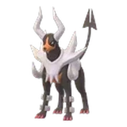
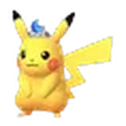
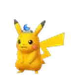
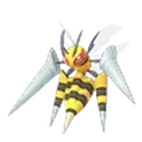
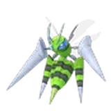
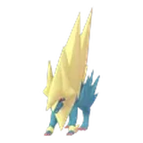
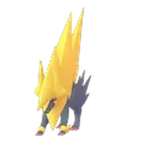
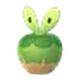

Twilight Wishes 2026 · 「黃昏之旅」季節壓軸活動
黃昏時分的心願
「黃昏時分的心願」是「黃昏之旅」季節的最後一場活動，為期一週。主角是戴著圍巾的太陽伊布與月亮伊布（三星團體戰），野外則以皮皮、海星星、小灰怪為主，海星星與小灰怪的異色機率提高，運氣好還能碰到岩狗狗。這次加成大多綁在免費的 GO Pass 上：衝到 1 級提高亮晶晶機率、10 級後捕捉星沙加倍，想換亮晶晶或囤星沙的人可以把交換和捕捉集中在這週。
活動亮點

戴圍巾的太陽伊布與月亮伊布
戴著太陽圍巾的太陽伊布、戴著月亮圍巾的月亮伊布在三星團體戰登場，兩隻都有機會遇見異色，是這次活動的主角。
異色海星星與小灰怪
整週遇見異色海星星與異色小灰怪的機率提高。牠們在地圖上和活動田野調查裡都會出現，想收異色的話多抓、多解任務。

野外的岩狗狗
除了皮皮、海星星、小灰怪，運氣好的話還能在地圖上遇見岩狗狗，也有機會是異色。
戴頭冠的皮卡丘
戴著太陽頭冠、月亮頭冠的皮卡丘在一星團體戰登場，單人就打得過，也可能遇見異色。

四隻超級團體戰
超級大針蜂、超級黑魯加、超級勾魂眼、超級雷電獸輪流在超級團體戰登場；GO Pass 也會發這四隻的超級能量。
回顧「黃昏之旅」的田野調查
活動田野調查的獎勵除了活動主題寶可夢，還會加入本季出現過的寶可夢，11/26 10:00 會換一批，前後兩段遇得到的不一樣。
主里程碑獎勵加碼
免費 GO Pass 到 1 級就提高交換亮晶晶與成為亮晶晶好朋友的機率，到 10 級捕捉星沙加倍（豪華版 3 倍）。
滿天星辰的地圖
活動期間遊戲內的天空會出現星星點綴，傍晚出門特別有氣氛。
 活動加成
活動加成
異色機率提高是所有人整週都有；其他加成要靠 GO Pass 主里程碑解鎖，免費版就拿得到。
- 遇見異色海星星的機率提高
- 遇見異色小灰怪的機率提高
- 交換時獲得亮晶晶寶可夢的機率提高
- 成為亮晶晶好朋友的機率提高
 捕獲寶可夢時的星星沙子加倍
捕獲寶可夢時的星星沙子加倍 GO Pass 豪華版：捕獲寶可夢時的星星沙子變成 3 倍
GO Pass 豪華版：捕獲寶可夢時的星星沙子變成 3 倍
 地圖上出現的寶可夢
地圖上出現的寶可夢
活動主題寶可夢都可能遇見異色，其中海星星與小灰怪的異色機率提高。
活動主題
- 皮皮
- 海星星
- 小灰怪
稀有運氣好才遇得到
 岩狗狗
岩狗狗
團體戰
一星團體戰
- 服裝戴著太陽頭冠的皮卡丘
- 服裝


戴著月亮頭冠的皮卡丘
三星團體戰
- 服裝
 戴著太陽圍巾的太陽伊布
戴著太陽圍巾的太陽伊布 - 服裝

 戴著月亮圍巾的月亮伊布
戴著月亮圍巾的月亮伊布
超級團體戰


超級大針蜂- 超級黑魯加

 超級勾魂眼
超級勾魂眼

超級雷電獸
以上寶可夢都可能遇見異色。11/28（六）14:00～17:00 另有「皮可西極致超級團體戰日」，超級皮可西首度登場。
田野調查遇得到的寶可夢
完成活動主題的田野調查，可以拿到超級能量並遇見活動主題寶可夢；本季壓軸的寶可夢在 11/26 10:00 換一批。
- 海星星
- 小灰怪
- 海星星
- 小灰怪

啃果蟲- 偶叫獒
- 服裝換上萬聖節服飾的耿鬼
- 服裝戴著萬聖節惡作劇裝飾的隨風球
- 納噬草
✦ 表示可能遇見異色；偶叫獒與納噬草官方未標示異色。官方提到活動主題寶可夢「等」，實際出現的可能更多；任務內容與對應獎勵官方尚未公布，以遊戲內為準。萬聖節服飾的耿鬼與隨風球暫用一般樣子的圖示。
 GO Pass：黃昏時分的心願
GO Pass：黃昏時分的心願
11/24 10:00 起自動獲得免費的「GO Pass：黃昏時分的心願」，到 11/30 20:00 前完成「Pass課題」累積 GO點數升級。活動期間還會追加額外課題。解鎖的獎勵要在 12/2 20:00 前領取。
- 遇見活動主題寶可夢的機會
- 星星碎片
- 神奇糖果
- 大針蜂、黑魯加、勾魂眼、雷電獸的超級能量
- 其他獎勵
- 額外遇見活動主題寶可夢的機會
- 活動主題訓練家姿勢
- 星星碎片
- 特級對戰入場券
- 其他獎勵
主里程碑獎勵加碼
- 1 級交換時獲得亮晶晶寶可夢的機率提高；成為亮晶晶好朋友的機率提高免費版
- 10 級捕獲寶可夢時的星星沙子加倍免費版
- 10 級捕獲寶可夢時的星星沙子變成 3 倍豪華版
- 「GO Pass豪華版＋6級」購買後會立即獲得升到 7 級所需的 GO點數。
- 豪華版隨時都能購買，之前已達成的獎勵也能補領；入場券與豪華版的供應情況可能因地區而異。
- 在 Web Store 購買豪華版會另外附贈 10 顆高級球、5 個活力塊、1 張特級對戰入場券與 5 個全滿藥（＋6級版附 2 張特級對戰入場券）；Web Store 限定的「＋6級高級禮盒」附 20 顆高級球、10 個活力塊、10 個全滿藥與 5 張特級對戰入場券。
- Web Store 買的豪華版會在 GO Pass 開始時生效。
活動期間行程
- 11/24（二）10:00活動黃昏時分的心願開始GO Pass 自動發放；季節壓軸田野調查（前段）開始。
- 戴著太陽圍巾的太陽伊布
- 戴著月亮圍巾的月亮伊布
- 11/26（四）10:00活動田野調查獎勵換成後段換上萬聖節服飾的耿鬼、戴著萬聖節惡作劇裝飾的隨風球、納噬草登場。
- 11/28（六）14:00–17:00超級團體戰皮可西極致超級團體戰日 →超級皮可西首度登場，可提升至新的「超級頂尖級」。

 超級皮可西
超級皮可西
- 11/30（一）20:00活動活動與 GO Pass 結束GO Pass 的 GO點數只能累積到這個時間。
- 12/2（三）20:00 前GO Pass 獎勵領取期限已解鎖的獎勵過了這個時間就無法領取。
攻略重點
- 先把 GO Pass 衝到 10 級
星沙加倍要到 10 級才開始，越早達成，吃到加倍的時間越長；第一天就把 Pass課題能解的都解掉。
- 亮晶晶交換集中在這週
GO Pass 1 級就能提高亮晶晶機率，想換亮晶晶或衝亮晶晶好朋友，可以把交換約在活動期間。
- 海星星、小灰怪多點開
兩隻的異色機率都提高，遇到就點開確認；田野調查也會給，任務順手解。
- 季節壓軸注意換段時間
啃果蟲和偶叫獒只到 11/26 10:00，之後換成萬聖節服飾的耿鬼、隨風球與納噬草，想要哪隻就看準時段解任務。
- 週六記得排皮可西
11/28 下午 14:00～17:00 是皮可西極致超級團體戰日，跟本活動重疊，可以一起規劃出門時間。
 常見問題
常見問題
黃昏時分的心願是什麼時候？
2026 年 11 月 24 日（週二）10:00 到 11 月 30 日（週一）20:00，台灣時間。GO Pass 獎勵可以領到 12 月 2 日 20:00。
要花錢才能參加嗎？
不用。團體戰、野生出現、田野調查與免費 GO Pass 所有人都有；GO Pass 豪華版（US$4.99）多了訓練家姿勢、特級對戰入場券等獎勵，10 級後捕捉星沙變成 3 倍。
戴圍巾的太陽伊布、月亮伊布在哪裡抓？
在三星團體戰，兩隻都可能遇見異色。
星沙加倍怎麼開啟？
把「GO Pass：黃昏時分的心願」升到 10 級（第 2 階段主里程碑），之後捕捉寶可夢的星星沙子加倍；豪華版是 3 倍。
哪些寶可夢的異色機率提高？
海星星與小灰怪。其他活動寶可夢也大多有異色，但機率沒有特別提高。